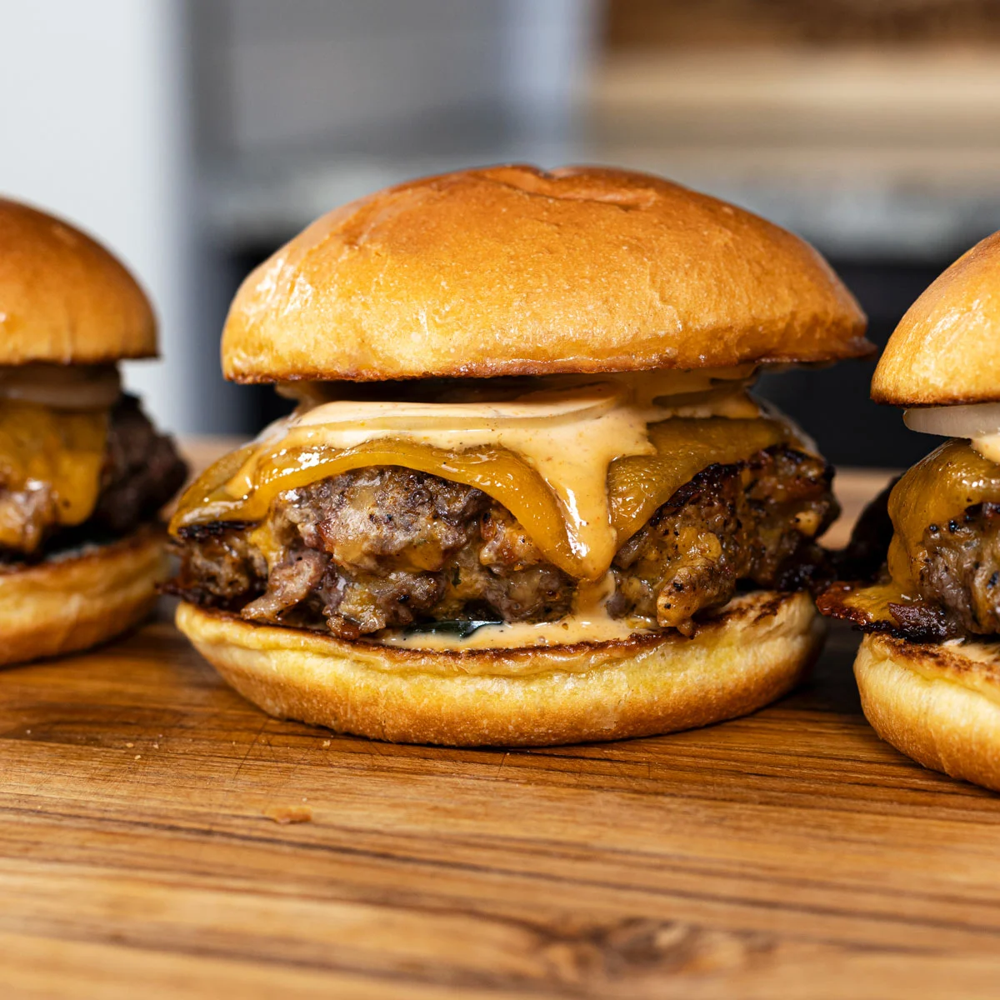

Description
A burger that's so good some say it's like crack
Igredneints:
- Buns
- 96% Lean Meat
- Ranch Seasoning
- Light Sour Cream
Steps
- Mix Seasoning, 135 grams Light Sour Cream, 454 grams 96% Lean Meat together
- Form into 4 patties
- Cook in air fryer at 400 for 15 minutes, flipping halfway
- Put on buns with whatever toppings and enjoy!